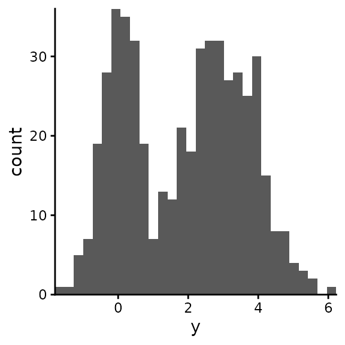
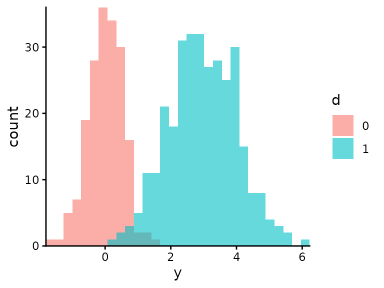
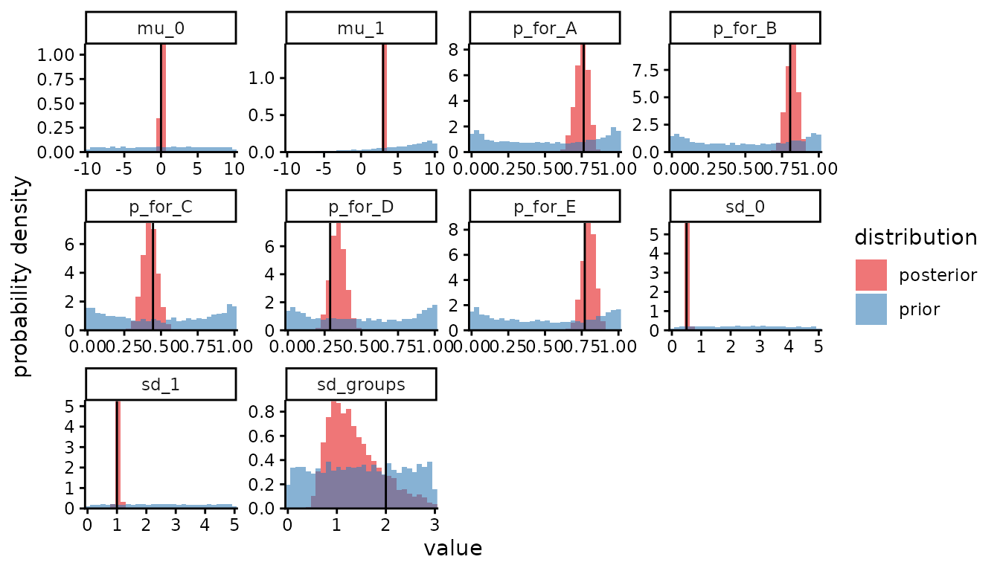
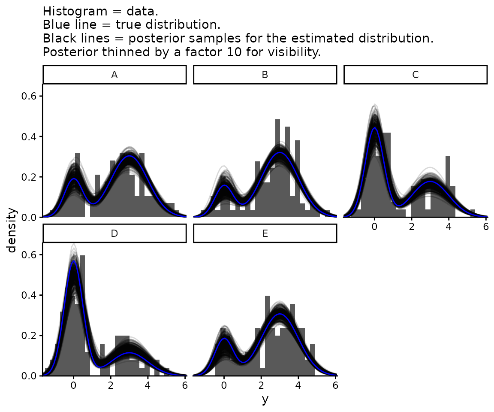
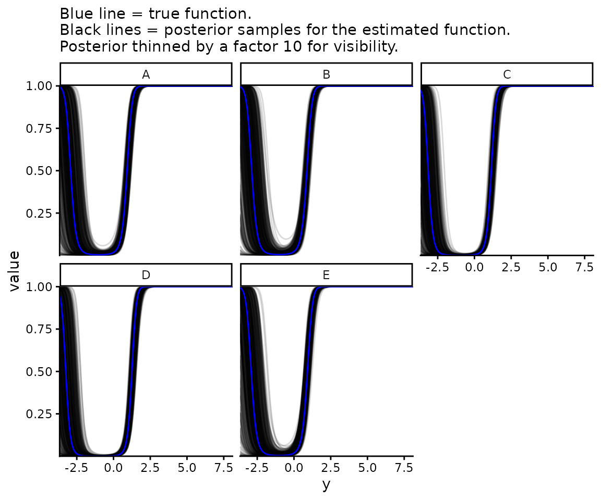

Consider the following model:
-
indexes the observation
- The unobserved binary variable
equals 1 with probability
,
0 otherwise:
- The observed variable
is normally distributed with parameters
if
,
or normally distributed with parameters
if
.
We can write this in a single equation:
For identifiability we define
,
i.e. whichever normal has the smaller mean we define to be
.
We obtain the unconditional probability of
without knowing
by marginalising over
,
giving a mixture of the two normals:
- There are discrete groups, indexed by , which differ in their probabilities for : is the probability that if is in . Parameterise the variability between values with an overall parameter , a length- vector of unconstrained regression coefficients, and a logit link function to keep probability parameters between 0 and 1: . We thus use parameters to describe degrees of freedom, but this allows us to have identical and correlated priors for the different groups (as opposed to picking one group as a reference and parameterising others relative to it, introducing greater uncertainty for the non-reference groups even before conditioning on the data). Specifically we model the different components of the vector as normally distributed, independently given a scale parameter :
- The design matrix , which is observed, equals 1 if observation is in group , 0 otherwise. So .
In summary, we have a logistic random-effects regression model for , and two-component normal mixture model for with indicating which component.
Set up our session
suppressPackageStartupMessages(library(mastiff))
suppressPackageStartupMessages(library(dplyr))
suppressPackageStartupMessages(library(ggplot2))
suppressPackageStartupMessages(library(magrittr))
suppressPackageStartupMessages(library(tidyr))
suppressPackageStartupMessages(library(stringr))
theme_set(theme_classic())
set.seed(12345) # For reproducibilitySimulate some data from a mixture of two normal distributions:
groups <- LETTERS[1:5]
results <- simulate_mixture_of_two_normals(n = 500,
groups = groups,
sd_groups = 2)
df_data <- results$data
params <- results$paramsInspect the data
head(df_data)
#> group d y
#> 1 B TRUE 3.8892457
#> 2 C FALSE 0.5479883
#> 3 B TRUE 2.1813534
#> 4 A TRUE 1.7631771
#> 5 A TRUE 5.3172256
#> 6 D FALSE -0.1556485Plot all the data
ggplot(df_data) +
geom_histogram(aes(y), bins = 30) +
coord_cartesian(expand = FALSE)
Visualise the two normals separately:
ggplot(df_data) +
geom_histogram(aes(y, fill = as.factor(as.integer(d))),
position = "identity",
alpha = 0.6,
bins = 30) +
coord_cartesian(expand = FALSE) +
labs(fill = "d")
Estimate the parameters using Bayesian inference. For almost all parameters we use uniform priors with specified upper and lower bounds. (‘Almost all’ means all except the normally varying components of , the group-specific values of that are defined by , and for which we specify a minimum and maximum but it is constrained to be greater than .)
prior_boundaries <- tribble(
~param, ~lower, ~upper,
"mu_0", -10, 10,
"mu_1", -10, 10,
"sd_0", 0, 5,
"sd_1", 0, 5,
"sd_groups", 0, 3,
"p", 0, 1
)
df_samples_posterior <- estimate_mixture_of_two_normals(
y = df_data$y,
groups = df_data$group,
prior_boundaries = prior_boundaries,
report_stan_progress = TRUE)
#>
#> SAMPLING FOR MODEL 'mixture_of_two_normals' NOW (CHAIN 1).
#> Chain 1:
#> Chain 1: Gradient evaluation took 0.000213 seconds
#> Chain 1: 1000 transitions using 10 leapfrog steps per transition would take 2.13 seconds.
#> Chain 1: Adjust your expectations accordingly!
#> Chain 1:
#> Chain 1:
#> Chain 1: Iteration: 1 / 2000 [ 0%] (Warmup)
#> Chain 1: Iteration: 200 / 2000 [ 10%] (Warmup)
#> Chain 1: Iteration: 400 / 2000 [ 20%] (Warmup)
#> Chain 1: Iteration: 600 / 2000 [ 30%] (Warmup)
#> Chain 1: Iteration: 800 / 2000 [ 40%] (Warmup)
#> Chain 1: Iteration: 1000 / 2000 [ 50%] (Warmup)
#> Chain 1: Iteration: 1001 / 2000 [ 50%] (Sampling)
#> Chain 1: Iteration: 1200 / 2000 [ 60%] (Sampling)
#> Chain 1: Iteration: 1400 / 2000 [ 70%] (Sampling)
#> Chain 1: Iteration: 1600 / 2000 [ 80%] (Sampling)
#> Chain 1: Iteration: 1800 / 2000 [ 90%] (Sampling)
#> Chain 1: Iteration: 2000 / 2000 [100%] (Sampling)
#> Chain 1:
#> Chain 1: Elapsed Time: 6.247 seconds (Warm-up)
#> Chain 1: 4.519 seconds (Sampling)
#> Chain 1: 10.766 seconds (Total)
#> Chain 1:
#>
#> SAMPLING FOR MODEL 'mixture_of_two_normals' NOW (CHAIN 2).
#> Chain 2:
#> Chain 2: Gradient evaluation took 0.000117 seconds
#> Chain 2: 1000 transitions using 10 leapfrog steps per transition would take 1.17 seconds.
#> Chain 2: Adjust your expectations accordingly!
#> Chain 2:
#> Chain 2:
#> Chain 2: Iteration: 1 / 2000 [ 0%] (Warmup)
#> Chain 2: Iteration: 200 / 2000 [ 10%] (Warmup)
#> Chain 2: Iteration: 400 / 2000 [ 20%] (Warmup)
#> Chain 2: Iteration: 600 / 2000 [ 30%] (Warmup)
#> Chain 2: Iteration: 800 / 2000 [ 40%] (Warmup)
#> Chain 2: Iteration: 1000 / 2000 [ 50%] (Warmup)
#> Chain 2: Iteration: 1001 / 2000 [ 50%] (Sampling)
#> Chain 2: Iteration: 1200 / 2000 [ 60%] (Sampling)
#> Chain 2: Iteration: 1400 / 2000 [ 70%] (Sampling)
#> Chain 2: Iteration: 1600 / 2000 [ 80%] (Sampling)
#> Chain 2: Iteration: 1800 / 2000 [ 90%] (Sampling)
#> Chain 2: Iteration: 2000 / 2000 [100%] (Sampling)
#> Chain 2:
#> Chain 2: Elapsed Time: 5.964 seconds (Warm-up)
#> Chain 2: 4.533 seconds (Sampling)
#> Chain 2: 10.497 seconds (Total)
#> Chain 2:
#>
#> SAMPLING FOR MODEL 'mixture_of_two_normals' NOW (CHAIN 3).
#> Chain 3:
#> Chain 3: Gradient evaluation took 0.000115 seconds
#> Chain 3: 1000 transitions using 10 leapfrog steps per transition would take 1.15 seconds.
#> Chain 3: Adjust your expectations accordingly!
#> Chain 3:
#> Chain 3:
#> Chain 3: Iteration: 1 / 2000 [ 0%] (Warmup)
#> Chain 3: Iteration: 200 / 2000 [ 10%] (Warmup)
#> Chain 3: Iteration: 400 / 2000 [ 20%] (Warmup)
#> Chain 3: Iteration: 600 / 2000 [ 30%] (Warmup)
#> Chain 3: Iteration: 800 / 2000 [ 40%] (Warmup)
#> Chain 3: Iteration: 1000 / 2000 [ 50%] (Warmup)
#> Chain 3: Iteration: 1001 / 2000 [ 50%] (Sampling)
#> Chain 3: Iteration: 1200 / 2000 [ 60%] (Sampling)
#> Chain 3: Iteration: 1400 / 2000 [ 70%] (Sampling)
#> Chain 3: Iteration: 1600 / 2000 [ 80%] (Sampling)
#> Chain 3: Iteration: 1800 / 2000 [ 90%] (Sampling)
#> Chain 3: Iteration: 2000 / 2000 [100%] (Sampling)
#> Chain 3:
#> Chain 3: Elapsed Time: 6.16 seconds (Warm-up)
#> Chain 3: 4.219 seconds (Sampling)
#> Chain 3: 10.379 seconds (Total)
#> Chain 3:
#>
#> SAMPLING FOR MODEL 'mixture_of_two_normals' NOW (CHAIN 4).
#> Chain 4:
#> Chain 4: Gradient evaluation took 0.000115 seconds
#> Chain 4: 1000 transitions using 10 leapfrog steps per transition would take 1.15 seconds.
#> Chain 4: Adjust your expectations accordingly!
#> Chain 4:
#> Chain 4:
#> Chain 4: Iteration: 1 / 2000 [ 0%] (Warmup)
#> Chain 4: Iteration: 200 / 2000 [ 10%] (Warmup)
#> Chain 4: Iteration: 400 / 2000 [ 20%] (Warmup)
#> Chain 4: Iteration: 600 / 2000 [ 30%] (Warmup)
#> Chain 4: Iteration: 800 / 2000 [ 40%] (Warmup)
#> Chain 4: Iteration: 1000 / 2000 [ 50%] (Warmup)
#> Chain 4: Iteration: 1001 / 2000 [ 50%] (Sampling)
#> Chain 4: Iteration: 1200 / 2000 [ 60%] (Sampling)
#> Chain 4: Iteration: 1400 / 2000 [ 70%] (Sampling)
#> Chain 4: Iteration: 1600 / 2000 [ 80%] (Sampling)
#> Chain 4: Iteration: 1800 / 2000 [ 90%] (Sampling)
#> Chain 4: Iteration: 2000 / 2000 [100%] (Sampling)
#> Chain 4:
#> Chain 4: Elapsed Time: 6.311 seconds (Warm-up)
#> Chain 4: 4.455 seconds (Sampling)
#> Chain 4: 10.766 seconds (Total)
#> Chain 4:For plotting purposes we sample from the prior as well as the posterior:
df_samples_prior <- estimate_mixture_of_two_normals(
y = df_data$y,
groups = df_data$group,
prior_boundaries = prior_boundaries,
sample_posterior_not_prior = FALSE)In a single plot, for each parameter, we compare the posterior to the
prior and the posterior to the true value. (This is, respectively, to
show the relative contributions of prior assumptions and data to our
conclusions, and as a check that the statistical model was correctly
implemented. Read more about doing this, and why you should always do
it, in the vignette Plotting Stan
output). Here we need the skip_stanfit_to_dt argument
of plot_posterior() because we’re giving it samples stored
as datatables instead of as stanfit objects. In the plot, each panel is
one parameter, and the black vertical line is the true value.
plot_posterior(df_samples_posterior,
prior_samples = df_samples_prior,
true_param_values = params,
skip_stanfit_to_dt = TRUE,
params_desired = c("mu_0", "mu_1", "sd_0", "sd_1", "sd_groups", paste0("p_for_", groups)))
The estimation of sd_groups isn’t great, but that
doesn’t matter provided our estimates of p for each group
are OK. Next we investigate the distribution of
after having marginalised over
,
i.e. the mixture of two normals, and how this distribution varies
between groups. First we calculate the true distribution given the true
parameters. For later convenience, at the same time as calculating
,
we also calculate as a function of y
.
y_values <- seq(from = min(df_data$y) - 2, to = max(df_data$y) + 2, length.out = 100)
true_ps <- params[paste0("p_for_", groups)]
df_y_distributions_true <- tibble(p = true_ps,
group = names(true_ps)) %>%
mutate(group = str_remove(group, "p_for_")) %>%
cross_join(tibble(y = y_values)) %>%
mutate(`P(y | d = 1)` = dnorm(y, params[["mu_1"]], params[["sd_1"]]),
`P(y | d = 0)` = dnorm(y, params[["mu_0"]], params[["sd_0"]]),
`P(y)` = p * `P(y | d = 1)` + (1 - p) * `P(y | d = 0)`,
`P(d = 1 | y)` = p * `P(y | d = 1)` / `P(y)`) %>%
select(group, y, "P(y)", "P(d = 1 | y)") %>%
pivot_longer(cols = c("P(y)", "P(d = 1 | y)"),
names_to = "which_function_of_y")Second we calculate the estimated distributions.
df_y_distributions <- df_samples_posterior %>%
as_tibble() %>%
mutate(sample = row_number()) %>%
select("sample", "mu_0", "mu_1", "sd_0", "sd_1", paste0("p_for_", groups)) %>%
pivot_longer(cols = paste0("p_for_", groups),
names_to = "group",
values_to = "p",
names_prefix = "p_for_") %>%
cross_join(tibble(y = y_values)) %>%
mutate(`P(y | d = 1)` = dnorm(y, mu_1, sd_1),
`P(y | d = 0)` = dnorm(y, mu_0, sd_0),
`P(y)` = p * `P(y | d = 1)` + (1 - p) * `P(y | d = 0)`,
`P(d = 1 | y)` = p * `P(y | d = 1)` / `P(y)`) %>%
select("sample", "group", "y", "P(y)", "P(d = 1 | y)") %>%
pivot_longer(cols = c("P(y)", "P(d = 1 | y)"),
names_to = "which_function_of_y")We plot both of these together with the data.
posterior_thinning_factor <- 10 # Keep one in every 10 samples
ggplot() +
geom_histogram(data = df_data, aes(x = y, y = after_stat(density)),
bins = 30) +
geom_line(data = df_y_distributions %>%
filter(which_function_of_y == "P(y)",
sample %% posterior_thinning_factor == 0),
aes(x = y, y = value, group = sample), alpha = 0.15) +
geom_line(data = df_y_distributions_true %>%
filter(which_function_of_y == "P(y)"),
aes(x = y, y = value), col = "blue") +
coord_cartesian(expand = FALSE) +
facet_wrap(~group) +
theme_classic() +
labs(subtitle = paste0("Histogram = data.\nBlue line = true distribution.\n",
"Black lines = posterior samples for the estimated ",
"distribution.\nPosterior thinned by a factor ",
posterior_thinning_factor, " for visibility.")) +
xlim(min(df_data$y), max(df_data$y))
#> Warning: Removed 10 rows containing missing values or values outside the scale range
#> (`geom_bar()`).
#> Warning: Removed 68000 rows containing missing values or values outside the scale range
#> (`geom_line()`).
#> Warning: Removed 170 rows containing missing values or values outside the scale range
#> (`geom_line()`).
Now plot , i.e. how likely each value is to have come from one normal distribution or the other.
ggplot() +
geom_line(data = df_y_distributions %>%
filter(which_function_of_y == "P(d = 1 | y)",
sample %% posterior_thinning_factor == 0),
aes(x = y, y = value, group = sample), alpha = 0.15) +
geom_line(data = df_y_distributions_true %>%
filter(which_function_of_y == "P(d = 1 | y)"),
aes(x = y, y = value), col = "blue") +
coord_cartesian(expand = FALSE) +
facet_wrap(~group) +
theme_classic() +
labs(subtitle = paste0("Blue line = true function.\n",
"Black lines = posterior samples for the estimated ",
"function.\nPosterior thinned by a factor ",
posterior_thinning_factor, " for visibility."))
You can see at the smallest values that is not monotonic in . This is always true for a mixture of two normal distributions unless they have identical variances. If they don’t, the one with the larger variances makes up an ever increasing proportion of the mixture at both asymptotically positive and asymptotically negative values of . This may be problematic for applications where we want to be monotonic, i.e. where we believe that the larger is the more likely it is to come from (or from depending). In this case, the model may be an acceptable application if the fitted model is monotonic over the range of values of interest. If not, a different mixture model using a distribution other than a normal should be used.